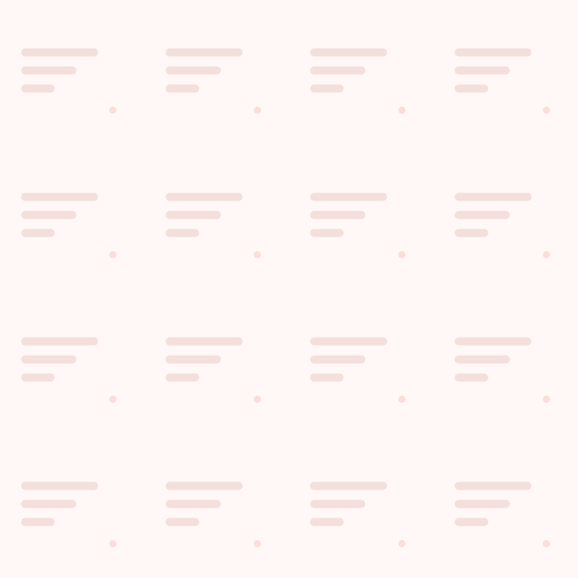
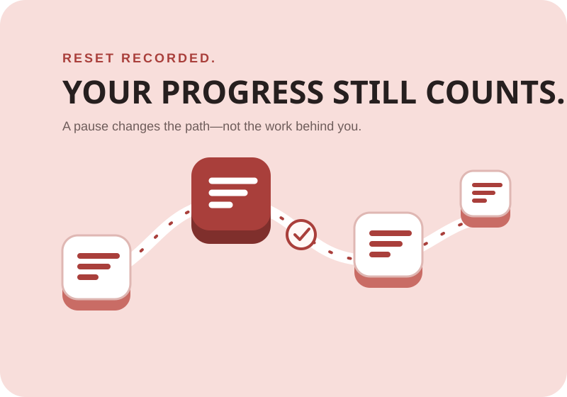

MONUMENT / VISUAL SYSTEM
CALM
MOMENTUM.
A compact visual kit for Habit Shaper: professional gamification, visible progress, and recovery without punishment.
Logo system
The Step represents a small action becoming repeated, visible progress.
PRIMARY
INVERTED
MONOCHROME
Functional icons
One stroke language for habit type, action, goal, and statistics.
Pattern & recovery
Supportive visual texture and a non-punitive illustration for restart moments.


Motion responses
State-led motion: small for everyday progress, bold only for meaningful milestones.
